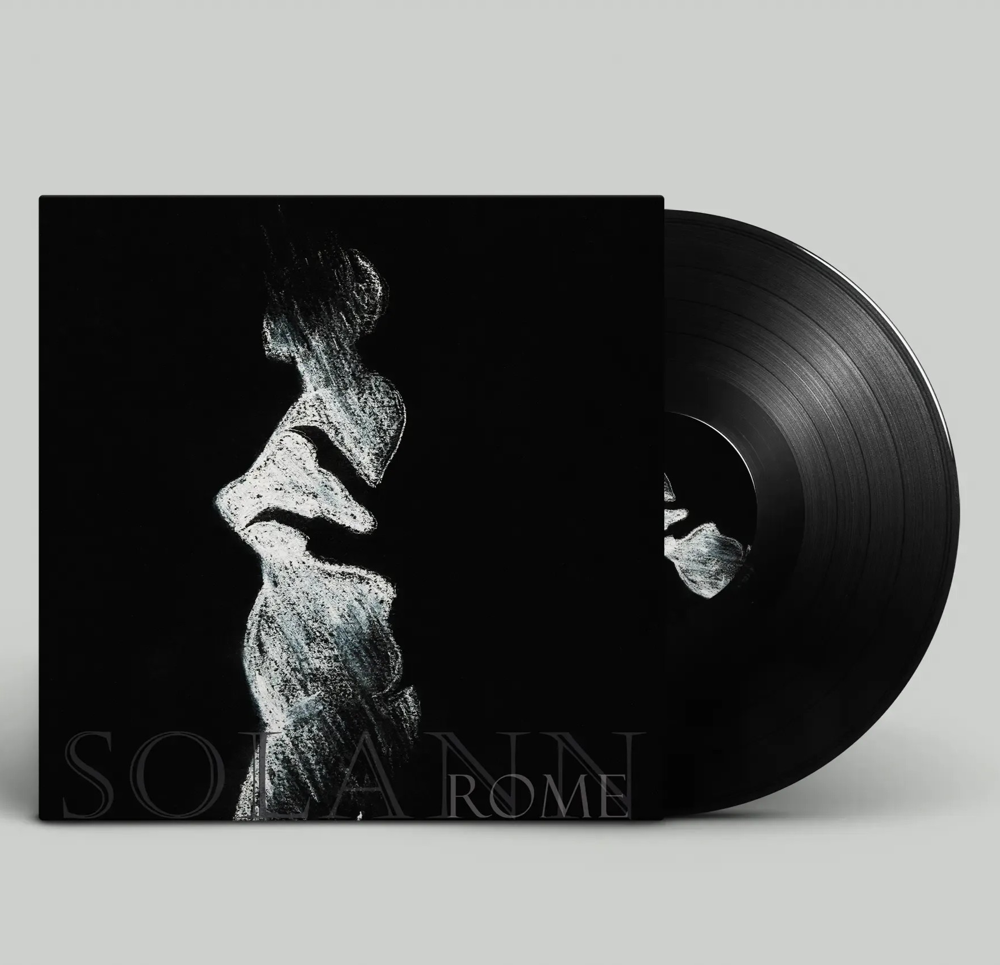
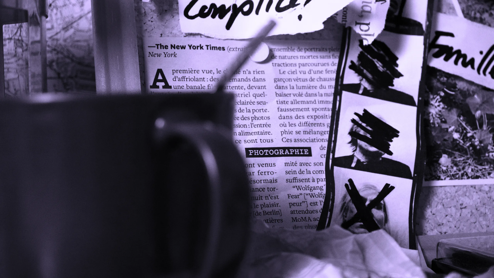
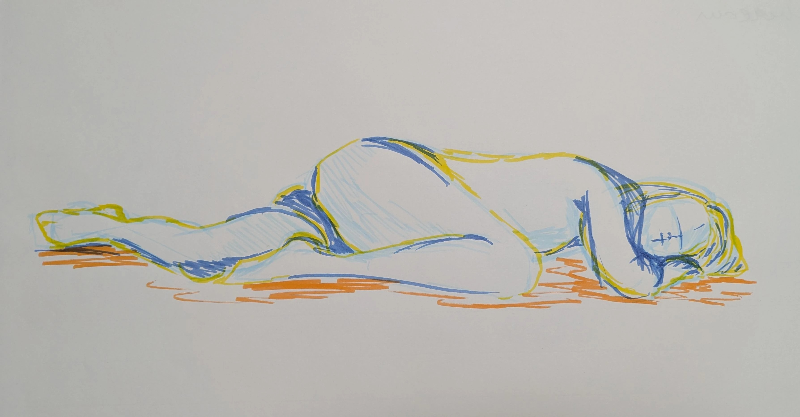
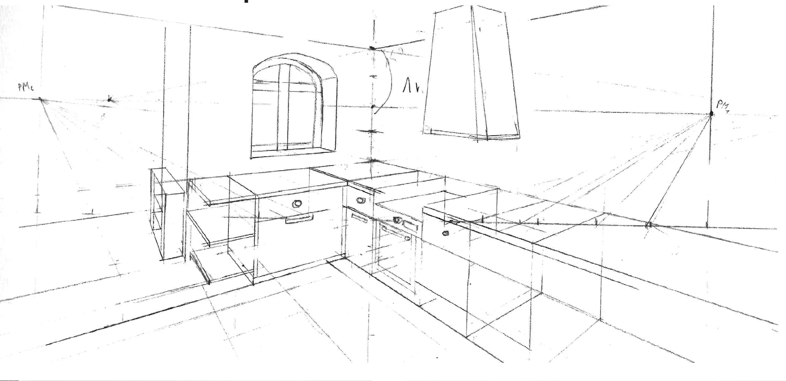
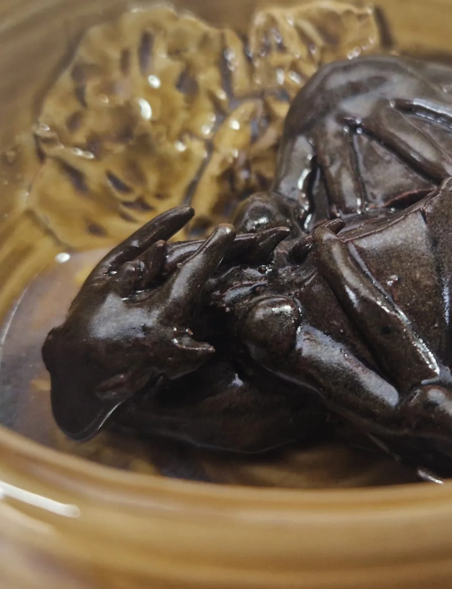

Mode lisibilité
Exercice autour de l'affiche typographique, l'objectif ici était de concevoir trois affiches différentes mettant en avant un mot, son univers et sa définition. Nous devions choisir un néologisme, c'est-à-dire un mot nouveau ou qui a fait son apparition dans le dictionnaire que récemment.
Création de vinyles autour de la musique "Rome" de Solann, l'objectif ici était de concevoir deux images par nous-mêmes et deux en utilisant l'intelligence artificielle. Sélection de deux images, mockup et réalisation ensuite de l'objet.


Projet de workshop vidéo sur 4 jours en trinôme, puis montage individuel. L'objectif était de crée un court générique de série fictive. Dans notre cas...
Voir plus
Travail sur un coffret d’artiste, j’ai choisi l’écrivaine Sandrine Collette. J’ai retravaillé certaines des couvertures de l’artiste pour faire ressortir une unité graphique et donner un attrait au livre...
Travail en trinôme de sérigraphie. Superpositions, jeux de couleur et dégradés. Format raisin cartonné ou sur feuille, d’autres ont été redécoupés au format carte postale...
Revue typographique permettant de recenser les ouvrages de la documentation de l’ESAD par thématiques. Ici, la nature et l’Homme. Inspiré de la revue des 30 ans de Graphisme en France.
Projet de maquette en volume reprenant une scène marquante du jeu «The last of Us 2», sous forme de papier découpé. Le fond est en papier calque peint illulminé par derrière.
A partir d’une collection personnelle de figurines de chevaux, l’objectif était d’en récolleter des formes graphiques par différents moyens, la couleur, les contours, les contreformes...
Chiens des buissons
Pareil-Pas pareil

Modèle vivant
Dessin d'observation

Perspective

Céramiques